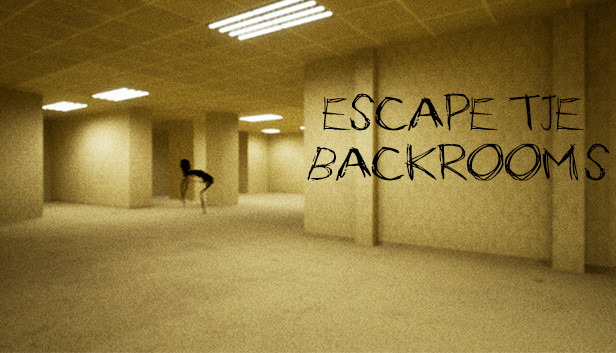

L'origine des Backrooms
Les Backrooms ont vu le jour via un fil de discussion posté sur le board /x/ de 4chan le 12 mai 2019, où un
utilisateur anonyme a demandé aux membres de poster des images perturbantes. Dans les réponses de ce fil se
trouvait une image représentant un long couloir jaune avec une moquette et des néons au plafond. Une des
réactions à cette image fut la copypasta originelle donnant naissance aux Backrooms.
Avec la montée de la popularité de ce post, plusieurs mèmes et histoires furent créées autour de cet
univers, ce qui a donné par la suite naissance à plusieurs sites d'écriture collaborative, tel qu'un wiki
hébergé par Wikidot, et un autre hébergé par Fandom.
La localisation géographique de la photo originelle du post 4chan reste inconnue, même si plusieurs
hypothèses quant a l'endroit où fut prise la photo ont été suggérées. Il est aussi possible que l'image ait
été générée par ordinateur. La légende urbaine a souvent été associée au concept de kenopsia, originellement
théorisé sur le site The Dictionary of Obscure Sorrows, étant décrit comme « L'atmosphère sinistre et
mélancolique d'un endroit habituellement bondé, mais étant aujourd'hui abandonné et silencieux ». Ce
concept est souvent associé à celui d'anemoia, « étant décrit comme : « un sentiment de nostalgie pour une
époque jamais vécue par la personne le ressentant »
